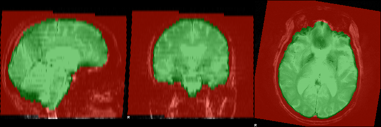

SIENA Reportsiena ADNI_009_S_4324_MR_AXIAL_T2_STAR__br_raw_20111116230534187_31_S129819_I267174.nii ADNI_009_S_4324_MR_AXIAL_T2_STAR__br_raw_20160215163821416_41_S209455_I403626.nii -o example_output |
BET brain extraction results
ADNI_009_S_4324_MR_AXIAL_T2_STAR__br_raw_20111116230534187_31_S129819_I267174
ADNI_009_S_4324_MR_AXIAL_T2_STAR__br_raw_20160215163821416_41_S209455_I403626
FLIRT A-to-B registration results
Field-of-view and standard space masking
Red shows the common field-of-view of the two timepoint images and the standard-space-based field-of-view masking (if this was run). Blue shows the brain masks, including standard-space-based brain masking (if this was run). Green shows the intersection of the two.
ADNI_009_S_4324_MR_AXIAL_T2_STAR__br_raw_20111116230534187_31_S129819_I267174

ADNI_009_S_4324_MR_AXIAL_T2_STAR__br_raw_20160215163821416_41_S209455_I403626
FAST tissue segmentation
These images show the tissue segmentation used to find the brain/non-brain boundary. The exact segmentation of grey matter vs. white matter is not important.
ADNI_009_S_4324_MR_AXIAL_T2_STAR__br_raw_20111116230534187_31_S129819_I267174
ADNI_009_S_4324_MR_AXIAL_T2_STAR__br_raw_20160215163821416_41_S209455_I403626
Final brain edge movement image
atrophy 0  "growth"
"growth"
Estimated PBVC: -.8905725000
SIENA Methods
Two-timepoint percentage brain volume change was estimated with
SIENA [Smith 2001, Smith 2002], part of FSL [Smith 2004]. SIENA starts
by extracting brain and skull images from the two-timepoint whole-head
input data [Smith 2002b]. The two brain images are then aligned to
each other [Jenkinson 2001, Jenkinson 2002] (using the skull images to
constrain the registration scaling); both brain images are resampled
into the space halfway between the two. Next, tissue-type segmentation
is carried out [Zhang 2001] in order to find brain/non-brain edge
points, and then perpendicular edge displacement (between the two
timepoints) is estimated at these edge points. Finally, the mean edge
displacement is converted into a (global) estimate of percentage brain
volume change between the two timepoints.
[Smith 2001] S.M. Smith, N. De Stefano, M. Jenkinson, and P.M. Matthews.
[Smith 2002] S.M. Smith, Y. Zhang, M. Jenkinson, J. Chen, P.M. Matthews, A. Federico, and N. De Stefano.
[Smith 2004] S.M. Smith, M. Jenkinson, M.W. Woolrich, C.F. Beckmann, T.E.J. Behrens, H. Johansen-Berg, P.R. Bannister, M. De Luca, I. Drobnjak, D.E. Flitney, R. Niazy, J. Saunders, J. Vickers, Y. Zhang, N. De Stefano, J.M. Brady, and P.M. Matthews.
[Smith 2002b] S.M. Smith.
[Jenkinson 2001] M. Jenkinson and S.M. Smith.
[Jenkinson 2002] M. Jenkinson, P.R. Bannister, J.M. Brady, and S.M. Smith.
[Zhang 2001] Y. Zhang, M. Brady, and S. Smith.
Normalised accurate measurement of longitudinal brain change.
Journal of Computer Assisted Tomography, 25(3):466-475, May/June 2001.
Accurate, robust and automated longitudinal and cross-sectional brain change analysis.
NeuroImage, 17(1):479-489, 2002.
Advances in functional and structural MR image analysis and
implementation as FSL.
NeuroImage, 23(S1):208-219, 2004.
Fast robust automated brain extraction.
Human Brain Mapping, 17(3):143-155, November 2002.
A global optimisation method for robust affine registration of brain images.
Medical Image Analysis, 5(2):143-156, June 2001.
Improved optimisation for the robust and accurate linear registration and motion correction of brain images.
NeuroImage, 17(2):825-841, 2002.
Segmentation of brain MR images through a hidden Markov random field model and the expectation maximization algorithm.
IEEE Trans. on Medical Imaging, 20(1):45-57, 2001.